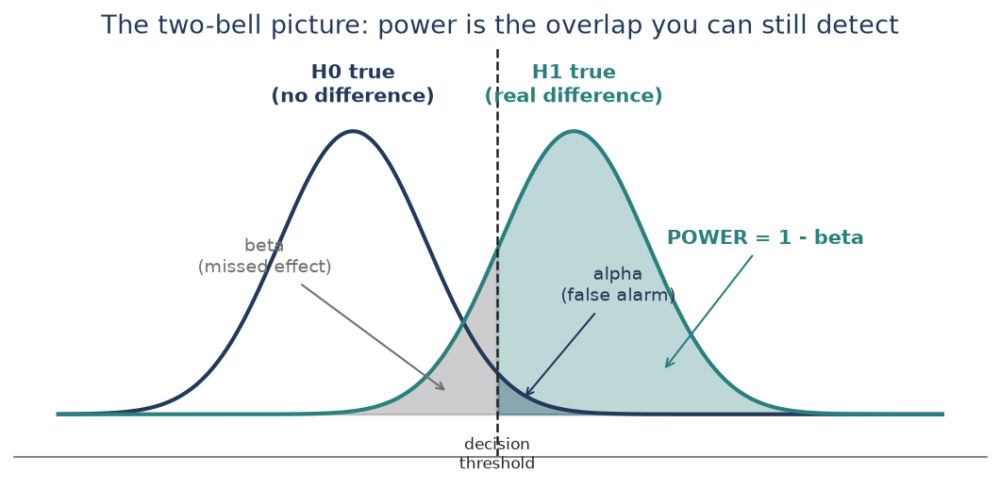
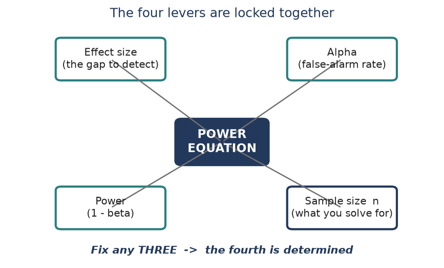
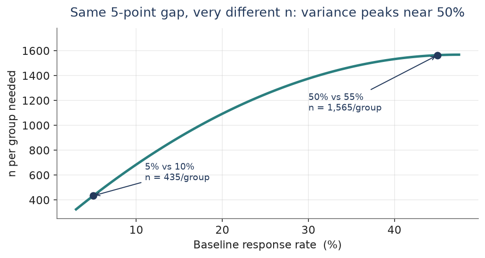
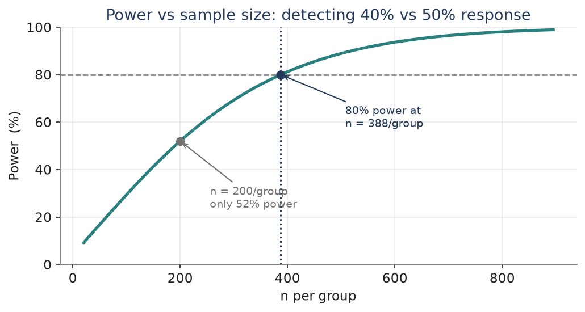
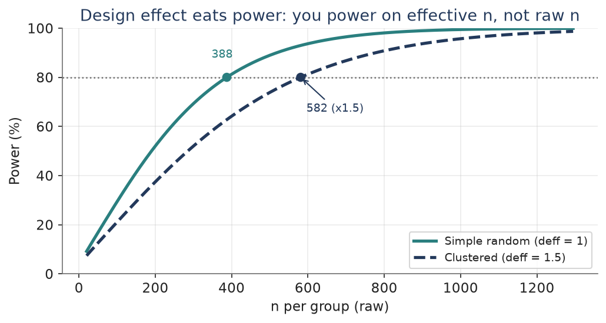
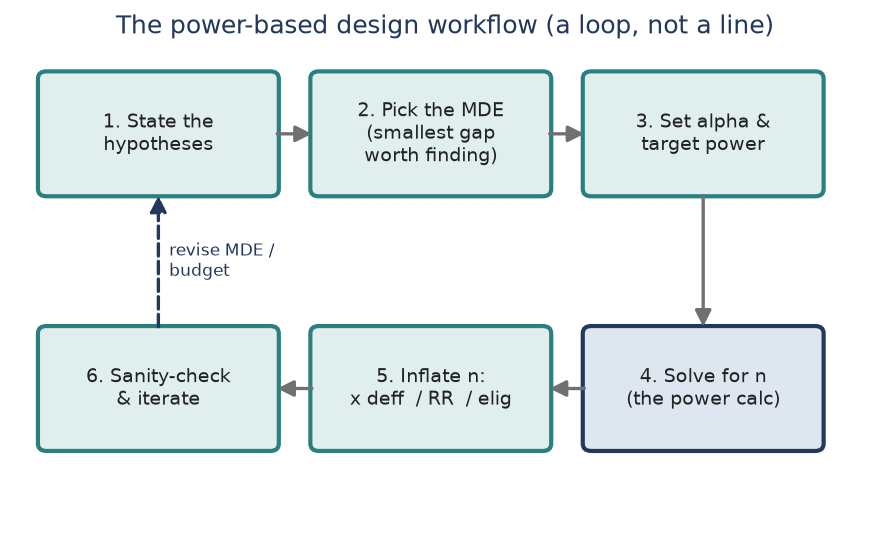

Module 10: Power and Sample Size
Bonus module · the calculation that answers ‘how many people do we need?’
Modules 0 through 9 taught you to draw a sample and analyze it honestly. This bonus module answers the question a study team asks before any of that: how many people do we actually need? That is a power calculation, and running it to get n is exactly what determining a sample size means. We anchor it to your AAMC internship task - comparing two response rates across invitation conditions - the calc you were handed but never got to fully learn. It is a cousin of Module 1”s “sample size for a target precision,” but here the target is a difference to detect, not a margin of error. 6 pieces of concept, then a hands-on seventh in R.
Piece 1 — What power actually means
Every comparison is a bet against being fooled. When you test whether two response rates differ, two things can go wrong. You can cry wolf - declare a difference that is not real (Type I error, rate alpha). Or you can miss a real difference that is sitting right in front of you (Type II error, rate beta). Power is the good outcome on that second axis: power = 1 - beta, the probability you catch a real difference when one truly exists.
- Alpha (Type I): the false-alarm rate you set in advance - usually 0.05. It is the risk you accept of seeing an effect that is not there.
- Beta (Type II): the miss rate. You do not set it directly; it falls out of your design once you fix effect size, alpha, and n.
- Power = 1 - beta: your detection rate. Convention is 80% (sometimes 90%) - an 80%-powered study catches a real effect 4 times out of 5, and misses it 1 time out of 5.

The picture is the whole idea. Two sampling distributions of your test statistic: one if there is no difference (navy), one if there is (teal). They overlap. Wherever you put the decision threshold, you trade one error for the other - push it right to shrink alpha and you grow beta. The only way to shrink both tails at once is to pull the bells apart or make them skinnier, which is exactly what a bigger effect or a bigger sample does. That is what the next piece unpacks.
The 2 x 2 of being right and wrong
| Decision: no difference | Decision: difference | |
|---|---|---|
| Truth: no difference | Correct (1 - alpha) | Type I error (alpha) |
| Truth: real difference | Type II error (beta) | Correct = POWER (1 - beta) |
Check yourself. In plain words, what is the difference between alpha and beta - and which one does “power” come from?
Piece 2 — The four levers
A power calculation is one equation tying together four quantities. Fix any three and the fourth is pinned down. That is the entire mental model - every power tool you will ever touch is just this equation solved for whichever slot you left blank.
- Effect size - the gap you want to catch (here, the difference between two response rates). Bigger gap → easier → less n.
- Alpha - your false-alarm tolerance. Smaller alpha (stricter) → harder → more n.
- Power - the detection rate you demand. Higher power → more n.
- Sample size n - usually the unknown you solve for. Determining a sample size = running this equation with n as the blank.

Two directions of the same equation matter in practice. Leave power blank and you get the diagnostic question - “given the n I can afford, what power do I have?” Leave n blank and you get sample-size determination - “to hit 80% power, how many do I need?” It is the second one that a study team hands you, and the one Piece 4 works end to end.
Which way each lever pushes the sample size
| Lever | Turn it… | …and n moves |
|---|---|---|
| Effect size (gap) | bigger | down (easier) |
| Alpha | smaller / stricter | up |
| Power (1 - beta) | higher (80 → 90%) | up |
| Variability of outcome | larger | up |
Check yourself. If your budget shrinks and you can only afford half the sample, which of the other three levers must you relax - and what does that cost you?
Piece 3 — Effect size for two proportions
Effect size is where people stumble, because for proportions it is not just the gap - the baseline rate matters too. A proportion”s variability is p(1 - p), which is largest at 50% and shrinks toward 0% or 100%. So the same absolute gap is hardest to detect (needs the most n) near 50%, and easier out in the tails.
- Define the minimum detectable effect (MDE): the smallest difference worth finding. You do not power for the gap you hope for - you power for the smallest gap that would still matter. Smaller MDE → much larger n (n grows like 1 / gap-squared).
- Detecting 50% vs 55% (a 5-point gap at the worst-case variance) needs ~1,565 per group. The same 5-point gap at 5% vs 10% needs only ~435 per group - 3-4x fewer, because variance is far smaller down there.
- Cohen”s h is the standardized version for two proportions: h = |2·arcsinsqrtp2 - 2·arcsinsqrtp1|. For 40% vs 50%, h ~ 0.20 (a “small” effect by Cohen”s 0.2 / 0.5 / 0.8 rule of thumb). It lets a tool talk about “effect size” without you re-specifying the two rates.

The takeaway for the AAMC setting: state the MDE first - the smallest response-rate improvement that would change a decision - and know that a modest baseline near 40-50% is the expensive zone. That single choice drives almost everything about the n you will report.
Same-looking gaps, very different sample sizes
| Comparison | Gap | Variance zone | n / group (80% power) |
|---|---|---|---|
| 5% vs 10% | 5 pts | small (tail) | ~434 |
| 40% vs 50% | 10 pts | near max | ~388 |
| 50% vs 55% | 5 pts | maximum | ~1,565 |
Check yourself. Two designs both aim to detect a 5-point difference. One is around 10%, the other around 50%. Which needs the bigger sample, and why?
Piece 4 — The AAMC calc, worked both ways
Now the real task: at AAMC you compared response rates across invitation conditions. Suppose condition A runs at a 40% response rate and you want to detect an improvement to 50% under condition B - a 10-point MDE - at alpha = 0.05 two-sided and 80% power. The two-proportion sample-size formula (per group, equal n) is:
n = ( z[a/2] * sqrt(2 p_bar q_bar) + z[b] * sqrt(p1 q1 + p2 q2) )^2 / (p1 - p2)^2
- Plug in: z[a/2] = 1.96, z[b] = 0.84, p_bar = 0.45, and (p1 - p2) = 0.10.
- Numerator = (1.96 x 0.704 + 0.84 x 0.700)^2 = (1.379 + 0.588)^2 = 3.87. Denominator = 0.10^2 = 0.01. So 3.87 / 0.01 = 387.3.
- Always round a sample size up: n = 388 per group, about 776 total. That is your sample-size determination - the number you would hand the study team.

Run the same equation the other direction to sanity-check a budget. If you could only field 200 per group, plug n in and solve for power instead: you would land at just ~52% power - more likely to miss the effect than catch it. That is why the calc is worth doing before fielding, not after: 200/group feels substantial but is badly underpowered for a 10-point gap.
One equation, three ways to point it
| You fix… | You solve for… | Result | Reading |
|---|---|---|---|
| MDE, alpha, power | n | ~388 / group | sample-size determination |
| MDE, alpha, n = 200 | power | ~52% | budget diagnostic |
| MDE, alpha, n = 100 | power | ~29% | clearly underpowered |
Interview anchor (AAMC) “At AAMC I compared response rates across invitation conditions. To size the study I ran a two-proportion power calc - set the MDE at the smallest response-rate gap worth acting on, held alpha at 0.05 and power at 80%, and solved for n per arm. I also checked the reverse: what power our feasible n actually bought, so we knew going in whether we were powered to see the effect.” That sentence turns the task you were handed into something you can now explain and defend.
Check yourself. You solved for n at 80% power and got ~388/group. Without redoing the arithmetic, will demanding 90% power make that number go up or down?
Piece 5 — What eats your power (the sampling tie-in)
The textbook formula assumes a clean, simple random sample with everyone responding. Real designs are messier, and each wrinkle eats power - meaning you need more raw n to keep the same detection rate. This is where the whole course comes back.
- Design effect (deff). Clustering and unequal weights inflate variance by deff (Modules 4, 6, 7). You do not power on raw n - you power on effective n = n / deff. To keep 80% power under deff = 1.5, multiply your clean n by 1.5: ~388/group becomes ~582/group.
- Nonresponse. Power depends on completed interviews, not invitations. If only 62% respond, divide the required completes by 0.62 to get the release count (Module 8”s inflation step). Your AAMC response-rate work is exactly this lever.
- One- vs two-sided. A one-sided test spends all alpha on one tail and needs slightly less n - but only use it when the direction is genuinely fixed in advance. Defaulting to two-sided is the safe, expected choice.
- Multiple comparisons. Testing many invite conditions at once inflates the family-wise false-alarm rate; a Bonferroni-style smaller alpha per test protects it but costs power, so each test needs more n.

This piece is what makes it your module rather than a generic stats chapter: a defensible field sample size is the clean power-calc n, then inflated for deff, nonresponse, and eligibility - the same chain you built in Module 8, now driven by a detection target instead of a margin of error.
Check yourself. Your power calc says you need 400 completes per group. The design has deff = 1.4 and you expect a 60% response rate. Roughly how many people must you release per group?
Piece 6 — The planning workflow
Putting it together, sizing a comparison study is a short, repeatable loop. It is a loop and not a line because the first n you get is often unaffordable - so you revise the MDE or the budget and go around again.
- 1. State the hypotheses. What two rates, which direction, one- or two-sided.
- 2. Pick the MDE. The smallest gap worth detecting - the single most consequential choice.
- 3. Set alpha and target power. Usually 0.05 and 80% (or 90%).
- 4. Solve for n. The power calc of Piece 4 - this is the sample-size determination.
- 5. Inflate n. Multiply by deff, divide by response rate, divide by eligibility → a real release count.
- 6. Sanity-check and iterate. Affordable? Reasonable MDE? If not, revise and loop.

In one breath. Power is your chance of catching a real difference; a power calc is one equation linking effect size, alpha, power, and n; leave n blank and you have determined your sample size; then inflate that n for design effect, nonresponse, and eligibility to get the number you actually field.
Piece 7 — Doing it in R (read-along reference)
R is not installed on this machine yet, so treat this piece as read-along, not run. When you do have R, two base calls and the pwr package cover almost everything above. Here is the AAMC calc in code.
# — — base R: two-proportion sample size, solve for n — — power.prop.test(p1 = 0.40, p2 = 0.50, sig.level = 0.05, power = 0.80) # → n = 387.3 (round up to 388) per group (two-sided by default)
# reverse direction: fix n, solve for power power.prop.test(p1 = 0.40, p2 = 0.50, n = 200) # → power ~ 0.52
# — — pwr package: effect-size (Cohen”s h) interface — — install.packages(“pwr”); library(pwr) h <- ES.h(0.50, 0.40) # standardized effect size pwr.2p.test(h = h, sig.level = 0.05, power = 0.80)
# unequal group sizes (e.g. more in one invite arm) pwr.2p2n.test(h = h, n1 = 300, n2 = 500, sig.level = 0.05)
# — — inflate the clean n for a real field release — — n_clean <- 388 deff <- 1.5 ; rr <- 0.62 ; elig <- 0.90 release <- ceiling(n_clean * deff / rr / elig) release # people to invite per arm
# — — when no formula fits: simulate — — sim_power <- function(n, p1, p2, reps = 5000) { hit <- replicate(reps, { a <- rbinom(1, n, p1); b <- rbinom(1, n, p2) prop.test(c(a, b), c(n, n))$p.value < 0.05 }) mean(hit) } sim_power(388, 0.40, 0.50) # ~ 0.80
Concept → R call
| You want… | R call |
|---|---|
| n for a two-proportion test | power.prop.test(p1, p2, power=) |
| power given n | power.prop.test(p1, p2, n=) |
| effect-size (Cohen”s h) interface | pwr.2p.test() / ES.h() |
| unequal group sizes | pwr.2p2n.test() |
| anything with no clean formula | simulate with rbinom + prop.test |
Check yourself. Which single R function gives you both the sample-size answer and the power answer, just by changing which argument you leave out?
Quick check — the whole module in five questions
- Define power in one sentence, using the word beta.
- Name the four levers a power calc ties together. Which one do you usually solve for?
- Why does a 5-point gap near 50% need more sample than a 5-point gap near 10%?
- Your clean power calc says 388/group. Deff is 1.5 and response is 62%. Roughly what release count do you report?
- In R, which function did the AAMC two-proportion calc, and how do you flip it from “solve for n” to “solve for power”?